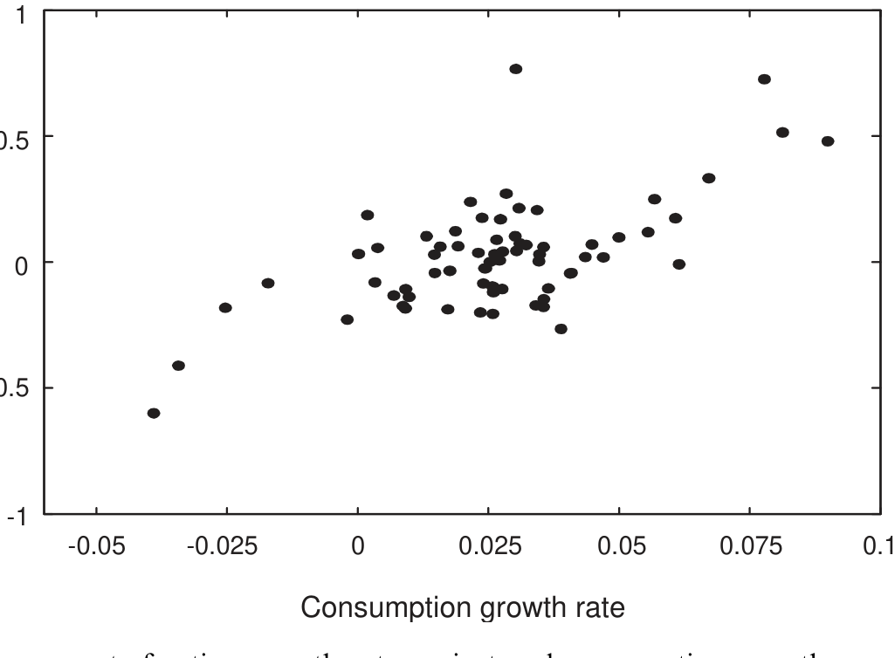
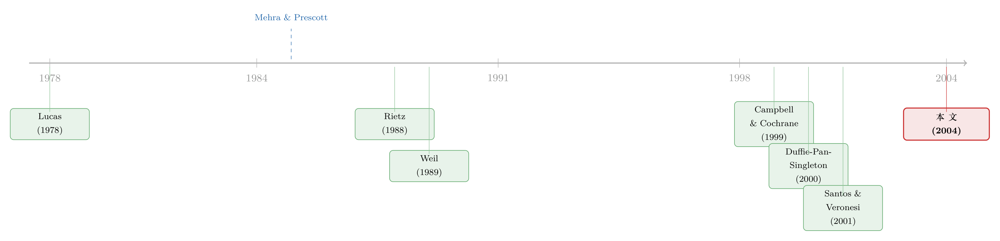

把股利从消费里「松绑」：一个让股权溢价大了六倍的小裂缝
本文读的是 Longstaff & Piazzesi (2004, Journal of Financial Economics)：把总股利建模成消费里一个「又小、又抖、又顺周期」的随机比例——他们称之为「公司份额（corporate fraction）」——股权溢价就能被拆成 消费风险、事件风险、公司风险 三块；校准到历史数据后，模型给出的溢价是标准 Mehra-Prescott 模型的 六倍多。
1 一个被偷偷塞进去的等式
先讲一个几乎所有人都会忽略的细节。
自从 Mehra and Prescott (1985) 把「股权溢价之谜（equity premium puzzle）」摆上台面，三十多年里，几代人都在折腾同一件事：换定价核（pricing kernel）。习惯形成、递归效用、灾难风险、异质信念……定价核被翻来覆去地改写。但是，资产定价的基本等式其实有两条腿——一条是定价核，另一条是现金流。而后面这条腿，长期以来被人们用一句话打发了：
令总股利等于总消费。
这句话听上去无伤大雅，毕竟在 Lucas (1978) 的果树经济里，红利就是消费。可它其实偷偷做了一个极强的假设：股票的现金流，和整个经济的消费，是同一个东西、同样地波动、同样地暴露于冲击。
接着，一个自然的问题是：现实里真的如此吗？
Longstaff 和 Piazzesi 把数据摆出来，答案是响亮的「不」。1929–2001 年间，公司盈利增长的波动率是 29.5%，而人均实际消费增长的波动率只有它的零头——盈利的波动差不多是消费的 十倍以上。更刺眼的是大萧条：消费在最初阶段下跌了将近 10%，而总公司盈利则被「彻底抹平」，跌幅超过 103%。但盈利又不是各跌各的——它和消费高度同向，二者增长率的相关系数高达 0.632（论文摘要里给的另一口径是 68.7%）。
一句话的张力：公司现金流比消费抖得多，却又和消费走得近。前者本该放大风险溢价，后者保证了这份风险「定得上价」。把这两件事同时塞进一个模型，就是这篇论文的全部野心。
为什么盈利会这么抖、又这么顺周期？作者给了一个朴素到容易被忽略的机制：股东是公司现金流的剩余索取者（residual claimant）。工资是优先于红利的「老资格」债权——劳动合同等于给工人买了一份对抗商业周期的保险。于是劳动收入占产出的份额是逆周期的，而盈利占产出的份额就只能是顺周期的。Gomme and Greenwood (1995) 在美国之外的八个 OECD 国家里都验证过这件事。
2 核心装置：会呼吸的「公司份额」
于是真正关键的一步出现了：作者不再让红利等于消费，而是把红利写成消费的一个随机比例。
定义「公司份额」\(F_t\) 为总红利与总消费之比，并让它由一个状态变量 \(X_t\) 驱动：
$$F_t = \frac{D_t}{C_t} = \exp(-X_t)$$
\(X_t\) 服从一个平方根跳跃扩散过程（square-root jump-diffusion）：
$$dX_t = (m - kX_t)\,dt - Z\sqrt{X_t}\,dZ_1 + \xi\,dq$$
这里 \(Z_1\) 是标准布朗运动，\(q\) 是强度为常数 \(\lambda\) 的泊松过程。只要 \(m,\,k,\,\xi\) 为正，\(X_t\) 就恒非负，从而 \(F_t = e^{-X_t}\) 永远落在 0 和 1 之间——这恰好对应它「红利占消费的比例」的经济含义。平方根项 \(\sqrt{X_t}\) 是 CIR 式的老朋友：它让波动随水平变化，又保证不越界；均值回复项 \(-kX_t\) 让 \(F_t\) 收敛到一个稳态。
消费本身也走一个跳跃扩散：
$$\frac{dC_t}{C_t} = a\,dt + s\sqrt{X_t}\,dZ_2 - c\,dq, \qquad 0 \le c < 1$$
两个布朗运动 \(Z_1,Z_2\) 的相关性是 \(\rho\,dt\)。注意一个设计上的巧思：\(X\) 和 \(C\) 的连续部分由两个（相关但不同的）布朗运动驱动，所以红利的小波动可以有自己的来源；但它们的跳由同一个泊松过程 \(q\) 触发——一场大萧条会同时砸向红利和消费，只是砸的力度不同。
把 \(D_t = C_t F_t = C_t e^{-X_t}\) 套上伊藤引理（Ito's Lemma），就得到红利的动态：
$$\frac{dD_t}{D_t} = \Big(a - m + (k + \rho s Z + Z^2/2)X_t\Big)dt + s\sqrt{X_t}\,dZ_2 + Z\sqrt{X_t}\,dZ_1 + \big((1-c)e^{-\xi} - 1\big)dq$$
对照消费的方程你会看到一件漂亮的事：红利的扩散项里同时出现了 \(dZ_1\) 和 \(dZ_2\)，所以它天然比消费更抖；红利的跳 \(((1-c)e^{-\xi}-1)\) 也可以大于消费的跳 \(-c\)。
这一点至关重要。它让模型绕开了 Mehra and Prescott (1988) 对 Rietz (1988) 的著名批评——Rietz 想用消费的大幅下跳（可能高达 90%）解释股权溢价，而 Mehra-Prescott 反驳说：美国历史上从没出现过那么大的消费崩塌。Longstaff-Piazzesi 的回应很干脆：让红利的跳和消费的跳分开来设定，于是一次「消费只跌 10%、股市却跌 75%」的事件，既符合历史，又能撑起一个像样的溢价。
一个极限检验：从 Eq.(3) 可见，当 \(Z = \xi = 0\) 时公司份额变成确定性的，红利和消费的随机部分完全重合，模型就退化回标准的 Mehra-Prescott 框架。所以这篇论文不是另起炉灶，而是在老框架上开了一道裂缝——把红利从消费里松绑了一点点。
3 把股权溢价拆成三块
有了现金流，剩下的是机械活。代表性投资者最大化幂效用：
$$E_t\left[\int_t^\infty e^{-\delta(s-t)}\frac{C_s^{1-\gamma}}{1-\gamma}\,ds\right]$$
均衡里股价满足欧拉方程：
$$P_t = E_t\left[\int_t^\infty e^{-\delta(s-t)}\left(\frac{C_s}{C_t}\right)^{-\gamma} D_s\,ds\right] = E_t\left[\int_t^\infty e^{-\delta(s-t)}\left(\frac{C_s}{C_t}\right)^{-\gamma} C_s F_s\,ds\right]$$
借助 Duffie, Pan and Singleton (2000) 的仿射跳跃扩散变换分析，作者把股价写成了闭式解：
$$P_t = C_t\int_t^\infty e^{-\delta(s-t)}A(t,s)\,F_t^{-B(t,s)}\,ds$$
其中 \(A(t,s)\)、\(B(t,s)\) 是一组由参数决定的确定性函数（细节见原文附录）。闭式解本身不是重点，重点是它能被微分、能被拆解。把它代回风险溢价的定义，作者得到了全文的「定理」——股权溢价 \(EP\) 的三分解：
这里 \(s_C\)、\(s_F\) 分别是消费和公司份额连续部分的瞬时波动率，\(J_L\) 是边际效用的百分比跳跃，\(J_P\) 是股价的百分比跳跃，\(H\) 是股价对 \(F\) 的弹性。让我们一项一项地看它们在说什么。
第一项 \(\gamma s_C^2\)——消费风险溢价。这就是教科书里的那个老项。它的毛病人尽皆知：消费波动太小。取 \(s_C = 3\%\)、\(\gamma = 5\)，它只值 0.45%。三十年的谜，就谜在这一项太小。
第二项 \(-\lambda J_L J_P\)——事件风险溢价。一次向下的消费冲击抬高边际效用，所以 \(J_L > 0\)；同一次冲击砸低股价，所以 \(J_P < 0\)；两个负负得正，整项为正。它的妙处在于：当 \(\lambda = 0\)（没有跳）它消失，当 \(J_L = 0\)（跳只打红利、不打消费）它也消失——必须是消费和股价同时被打，这一项才活着。作者的算例：假设大萧条级别的事件平均百年一遇，消费跌 10%、股市跌 75%，则边际效用的跳 \(J_L = 0.9^{-5} - 1 = 69.4\%\)，于是事件溢价 \(= 0.01 \times 0.694 \times 0.750 = 0.52\%\)——已经比第一项还大。
第三项 \(\gamma H \rho s_C s_F\)——公司风险溢价，这是本文的新发现。它正比于消费增长与公司份额变化之间的协方差。如果红利是消费的固定比例（Mehra-Prescott 的世界），则 \(s_F = 0\)，这一项为零——哪怕红利消费之比不是 1；如果连续冲击的相关性 \(\rho = 0\)，它也为零。换句话说，光是「红利比消费抖」还不够，必须「抖得和消费同向」，溢价才出得来。作者给的上界算例够吓人：取 \(s_C = 3\%\)、\(s_F = 30\%\)、\(\rho = H = 1\)，这一项值 4.50%——是消费风险溢价的十倍。
三项加起来，一个粗略上界是 0.45% + 0.52% + 4.50% = 5.47%，量级一下子就对了。
4 数据：为什么用「估算红利」而不是「报告红利」
模型要落地，得先把那个核心变量——公司份额——量出来。这里藏着本文一个不显眼但很关键的方法论选择。
最直接的做法是拿报告的总红利除以总消费。但作者拒绝了，理由是公司有人为平滑红利（dividend smoothing）的顽疾：好年景留存、坏年景动用资本来维持派息。这条证据可以一路追溯到 Lintner (1956)。一旦红利被管理层为了信号或代理目的（Bhattacharya, 1979; Miller and Rock, 1985）刻意抹平，报告红利的随机性质就和公司真实现金流脱了钩。更别说 Fama and French (2001) 发现不分红的公司已占股市市值的四分之一，而股票回购等分配又没进红利口径。
于是作者改用估算红利（imputed dividends）：假设「经济意义上的红利」等于一个常数派息率（payout ratio）乘以总公司盈利。这样做的好处是——估算红利的百分比变化等于盈利的百分比变化，于是估算红利的波动与相关性，就直接继承了公司盈利的波动与相关性。盈利数据取自 NIPA 的税后公司利润（用税后而非税前，因为红利要从税后利润里派出；见 McGrattan and Prescott, 2001）。派息率取历史均值 50%（样本期中位数 46.5%、均值 54.6%），且作者强调改派息率对结论几无影响。
这条数据看起来什么样？公司份额从 1932 年的低点 −2.11% 到 1959 年的高点 7.81%，均值 4.92%，水平标准差 1.62%（即均值的 32.99%），百分比变化的标准差 27.03%。一阶序列相关只有 0.058——基本不可预测。而它和消费增长的相关性是 0.632，把公司份额变化对消费增长做回归，消费增长系数的 t 值高达 6.54：消费每跌 1%，公司份额大约跟跌 6%，进而红利跌约 7%。下图把这层强顺周期性画得一清二楚。

Figure 2: Plot of the corporate fractiongrowth rate against real consumptiongrowth per capitafor the
正是这张散点图里那条向上的云带——公司份额对消费的高弹性、高同向——为第三项「公司风险溢价」提供了全部的经验弹药。
5 校准之后：六倍，但只走了一半
把上面这些数字喂进模型，结果如何？
用相对风险厌恶系数 \(\gamma = 5\) 校准，三项溢价分别是 0.36%、0.51%、1.39%，总计 2.26%。也就是说，模型给出的股权溢价是标准 Mehra-Prescott 溢价（第一项）的 六倍多。换一组校准，结论稳健。
但真正诚实的一步在于作者自己泼的冷水：2.26% 仍不到历史估计的一半。模型没有完整地解决股权溢价之谜。更糟的是，无风险债券的欧拉方程在本文里仍是标准的那个——于是它原封不动地继承了 Weil (1989) 的无风险利率之谜（risk-free rate puzzle）。
这份坦白反而是本文的可信之处。作者把话说清楚：这套现金流建模可以和别的元素叠加——比如 Campbell and Cochrane (1999) 的习惯形成、或 Constantinides (2002) 讨论的不完全市场下的投资者异质性——才可能走完剩下的半程。它提供的不是终点，而是一条长期被忽视的、来自「现金流那条腿」的增量。
6 文献脉络
把这篇论文放进谱系里，故事会更清楚。
源头是 Lucas (1978) 的纯交换经济与 Mehra and Prescott (1985) 提出的谜。此后两条线分头推进。定价核那条线热闹非凡：习惯形成（Campbell and Cochrane, 1999）、递归效用与无风险利率之谜（Weil, 1989）等等。灾难那条线则由 Rietz (1988) 开启，用消费的稀有大跳解释溢价，却遭 Mehra and Prescott (1988) 以「历史上没那么大的消费崩塌」反驳。
而现金流那条线长期人烟稀少。少数例外是 Merton (1971) 与 Santos and Veronesi (2001)，把总现金流写成「消费减去劳动收入」；以及 Barberis and Huang (2001)、Menzly, Santos and Veronesi (2002, 2003)，从个体公司层面让总红利偏离总消费。Longstaff 和 Piazzesi 站在这条线上，借了 Duffie, Pan and Singleton (2000) 的仿射跳跃扩散工具，把「公司份额」做成一个可解的连续时间状态变量——既接住了 Rietz 的事件风险，又生出了全新的公司风险。

值得一提的是，「红利与消费应当分开建模」这个主题，在后来的资产定价里被反复擦亮（关于把股票和「同年限债券」分开来比、从而拷问股利久期的思路，可参见《久期错配：当我们把股票和「同样年限」的债券放在一起比》；关于在这个老谜上继续做减法的尝试，可参见《searching-for-the-equity-premium》）。劳动份额逆周期、资本份额顺周期这条宏观暗线，也和《你的工资单，藏着股市下一年的收益》里讲的 Santos-Veronesi 逻辑一脉相承。
评论与延伸（Q&A + 研究方向）
(a) 几个可能的疑问
Q：第三项「公司风险溢价」凭什么是新东西，它和事件风险溢价的区别在哪？
事件风险溢价 \(-\lambda J_L J_P\) 来自离散的跳——是消费和股价被同一场灾难同时砸出来的；公司风险溢价 \(\gamma H \rho s_C s_F\) 来自连续的扩散——是平时小波动里红利与消费的同向协动。前者管「黑天鹅」，后者管「日常的顺周期」。两者都需要红利和消费「绑在一起」，但绑的渠道一个是泊松跳、一个是布朗相关。
Q：用「估算红利」替换「报告红利」，会不会是为了让结果好看而挑数据？
这是最该警惕的地方，但作者的理由站得住。报告红利被平滑（Lintner, 1956 以降的大量证据），其随机性质和真实现金流脱钩，且漏掉了回购等分配。改用「派息率 × 税后公司盈利」后，红利的波动直接等同盈利波动——这恰恰是模型需要的现金流敏感性。而且作者验证了派息率取值对结论几无影响，这降低了「调参数凑结果」的嫌疑。
Q：模型既然解释不了全部溢价，还继承了无风险利率之谜，那它的贡献到底是什么？
贡献在于把研究者三十年来忽略的「现金流那条腿」重新接上，并证明它能独立地把溢价放大六倍。它是可加的模块：和习惯形成、异质性等定价核改进叠加后，有望补上剩下的半程。把一个增量讲清楚、并诚实交代边界，本身就是好工作。
Q：1931–1932 年被剔除，会不会正好把最关键的大萧条信息扔掉了？
作者剔的是这两年公司份额的百分比变化（因为 1931–1932 盈利为负，百分比无法正常定义），而非把大萧条整段排除——水平数据里大萧条仍在，且他们专门强调样本含 1930 年代对识别事件风险至关重要。作者也坦言这种处理可能低估了百分比变化的波动，方向上是保守的。
Q：把跳的强度设成「百年一遇」，会不会陷入 peso problem？
会，而且作者明说了：估计灾难事件的频率和幅度本就有「peso 问题」式的困难，这正是他们坚持把 1930 年代纳入样本的理由——否则灾难尾部根本无从校准。这是诚实，但也意味着事件风险溢价那
0.51%对你信不信「百年一遇」相当敏感。
Q：这套框架能搬到公司债/信用市场吗？
直觉上很合适。股东是剩余索取者，所以盈利顺周期、波动大；债权人是优先索取者，现金流更平、更逆周期保护。把「公司份额」框架按资本结构优先级拆开，原则上能同时给股和债定价，并解释为何信用利差也顺周期。这正是下面研究方向里最自然的一条。
(b) 几个可能的研究问题与提案
1. 把「公司份额」框架延伸到信用利差的周期性
【经济故事】股东拿剩余、债主拿优先，所以同一场冲击下红利的跳远大于票息的跳。若把红利、票息分别建成消费的不同优先级比例，模型能同时输出股权溢价和信用利差，并解释为何利差在衰退里张开。【可行性】中。现金流数据（NIPA 盈利、利息支付）可得，但要把违约边界内生进仿射框架，技术上比本文复杂；识别上需要一个能同时匹配股、债两组矩的校准。
2. 外资持有人是否改变了「公司份额」的定价
【经济故事】本文是封闭经济的代表性投资者。若边际投资者部分是外资，其消费篮子和本国不同，第三项里的 \(\rho\)（消费—公司份额相关性）对外资而言可能更低，从而压低公司风险溢价。【可行性】中低。需要跨国持股（如 TIC、各国登记）与各国 NIPA 盈利/消费数据；难点在于「谁是边际投资者」无法直接观测，识别要靠持股结构的外生变动（如指数纳入、资本账户开放）。
3. 公司份额的波动与流动性溢价的交互
【经济故事】顺周期且高波动的现金流，在坏年景同时遭遇「基本面变差」和「市场变薄」。若把交易摩擦叠加到本文的跳跃扩散上，事件风险溢价里也许该含一块流动性补偿。【可行性】中。可结合公司债大宗交易、价格冲击数据；识别上可用危机窗口（如 2008、2020）把基本面跳和流动性跳分开——这与公司债流动性危机的实证文献天然衔接。
4. 用回购调整后的「真实分配」重估公司份额
【经济故事】本文用「派息率 × 盈利」绕过红利平滑，但回购本身比红利更抖（Allen and Michaely, 2002）。直接用「红利 + 回购」构造的总分配，可能让公司份额更波动、更顺周期，从而进一步放大第三项。【可行性】高。Compustat/CRSP 的回购数据可得，构造总分配是直接的；可作为本文校准的稳健性与扩展，doable。
参考文献
- Barberis, N., Huang, M. (2001). Mental accounting, loss aversion and individual stock returns. Journal of Finance 56, 1247–1292.
- Bhattacharya, S. (1979). Imperfect information, dividend policy and "the bird in the hand" fallacy. Bell Journal of Economics 10, 259–270.
- Campbell, J., Cochrane, J. (1999). By force of habit: a consumption-based explanation of aggregate stock market behavior. Journal of Political Economy 107, 205–251.
- Constantinides, G. (2002). Rational asset pricing. Journal of Finance 57, 1567–1592.
- Duffie, D., Pan, J., Singleton, K. (2000). Transform analysis and asset pricing for affine jump-diffusions. Econometrica 68, 1343–1376.
- Fama, E., French, K. (2001). Disappearing dividends: changing firm characteristics or increased reluctance to pay? Journal of Financial Economics 60, 3–43.
- Gomme, P., Greenwood, G. (1995). On the cyclical allocation of risk. Journal of Economic Dynamics and Control 19, 91–124.
- Lintner, J. (1956). Distribution of incomes of corporations among dividends, retained earnings and taxes. American Economic Review 46, 97–113.
- Longstaff, F. A., Piazzesi, M. (2004). Corporate earnings and the equity premium. Journal of Financial Economics 74(3), 401–421.
- Lucas, R. (1978). Asset prices in an exchange economy. Econometrica 46, 1429–1445.
- Mehra, R., Prescott, E. (1985). The equity premium puzzle. Journal of Monetary Economics 15, 145–161.
- Mehra, R., Prescott, E. (1988). The equity premium puzzle: a solution? Journal of Monetary Economics 22, 133–136.
- Menzly, L., Santos, T., Veronesi, P. (2002). Habit formation and the cross section of stock returns. Working Paper, The University of Chicago.
- Merton, R. (1971). Optimum consumption and portfolio rules in a continuous time model. Journal of Economic Theory 3, 373–413.
- Miller, M., Rock, K. (1985). Dividend policy under asymmetric information. Journal of Finance 40, 103–151.
- Rietz, T. (1988). The equity premium puzzle: a solution? Journal of Monetary Economics 21, 117–132.
- Santos, T., Veronesi, P. (2001). Labor income and predictable stock returns. Working Paper 8309, NBER.
- Weil, P. (1989). The equity premium puzzle and the risk-free rate puzzle. Journal of Monetary Economics 24, 401–421.